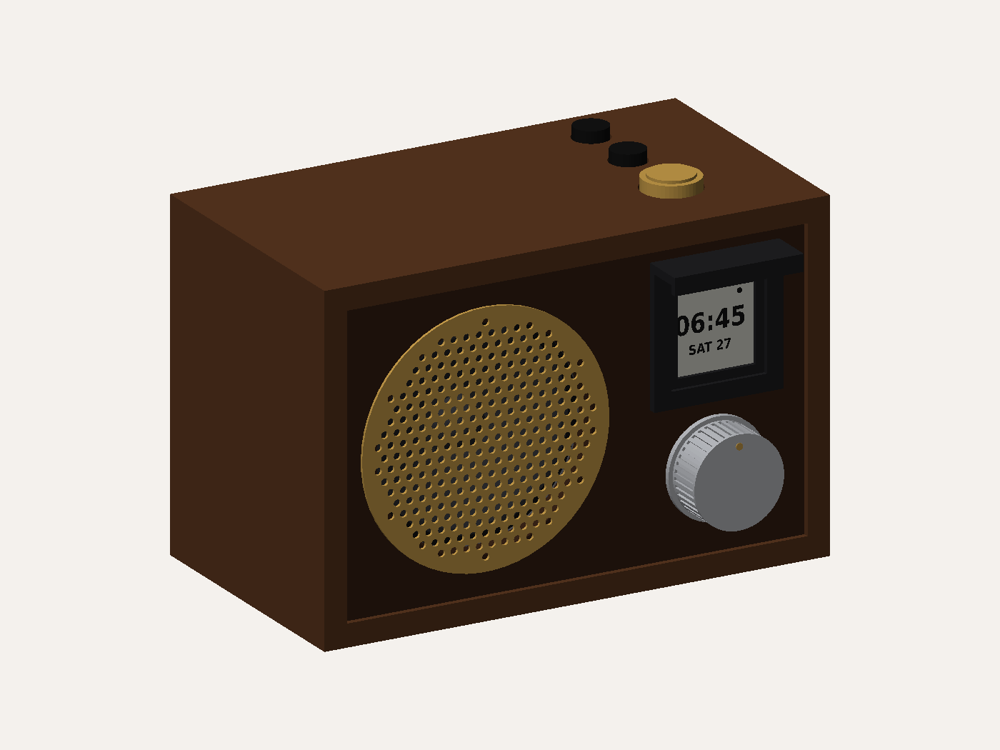
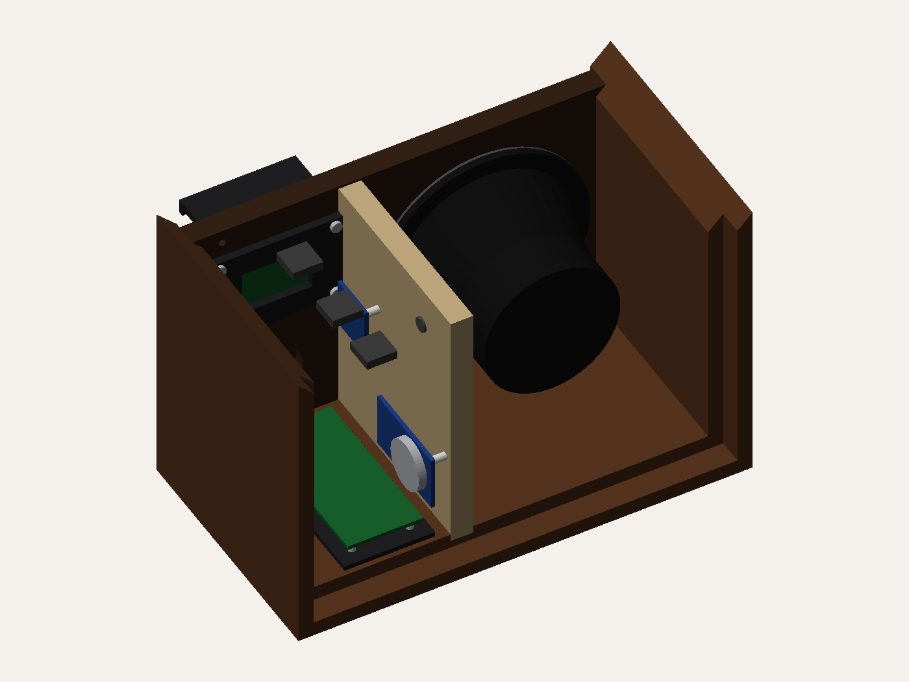

A bedside internet radio alarm clock in a retro wood cabinet. An e-ink display shows the time, date and what's playing, lit from above by a dimmable warm light. Alarms pair a time with a station and fade up from silence over a minute. Everything you'd do half-asleep is a physical knob or button — the phone stays in another room.
Planning complete — hardware not yet ordered, station management working
The one rule this design answers to
No phone at the bedside. Every function you'd reach for in the dark — silencing an alarm, snoozing, turning on the light, changing station, adjusting volume — is a knob or a button on the device itself. The web page exists only for the occasional curating job you'd do from a couch, never as a dependency at 6am.
The design

Front three-quarter

Cutaway — speaker chamber and electronics bay
Renders of the FreeCAD model in cad/, generated by cad/build_radio.py. Every part is interference-checked.
Specification
Enclosure
Mitred hardwood, 180w × 120h × 100d mm
Brain
Raspberry Pi Zero 2 W
Display
1.54" e-ink, 200×200 square
Audio
MAX98357A → Dayton PC83-4, sealed
Controls
Rotary encoder + 3 buttons
Light
2700K strip, PWM dimmed
Power
5V 3A USB, SELV only
Estimated cost
~$320 AUD
Where the project stands
BuiltStation search and favourites. Searches the Radio Browser database from the Pi, one-click favourite, persists to disk. Tested against the live API.
BuiltAlarm scheduling and storage. Times, repeat days, per-alarm volume, snooze. Pure logic, tested — including the awkward cases like a weekday alarm correctly skipping the weekend.
DecidedEnclosure direction. The retro wood cabinet, of the four concepts explored.
DecidedPhysical control scheme. One detented encoder with push-select, plus menu/back, snooze and dismiss buttons.
NextOrder parts and breadboard. Nothing is bought yet. Every subsystem gets proven loose on the bench before any timber is cut.
NextDisplay, audio, light and input code. All four wait on real hardware to write against.
Design decisions worth knowing
No hosted backend. Station discovery uses the free, open Radio Browser database; the stations you actually use live in a file on the Pi. Nothing to host, nothing to pay for, nothing to keep running.
Alarms fire entirely on-device. Time and station are stored locally, so nothing about waking up depends on a network round-trip.
Station search runs on the Pi, not in the browser. Radio Browser requires DNS-based mirror discovery that browser JavaScript can't perform, so the Pi handles lookup and retry and serves its own page.
A real-time clock module, despite the Pi not needing one. A Pi restores a stale time at boot and only corrects once WiFi returns. Acceptable for most projects; not for this one.
Playback shells out to mpv rather than using a Python audio library, which handles the messy variety of internet radio stream formats for free.
src/
main.py entry point, wires everything together
alarm/ scheduling + storage [built, tested]
stations/ Radio Browser + favorites [built, tested]
web/ local management page [built, partial]
audio/ mpv wrapper, volume ramp [not started]
display/ e-ink driver + layout [not started]
input/ encoder + button handling [not started]
light/ PWM front-light control [not started]
data/
favorites.json saved stations
alarms.json configured alarms
systemd/
digitalradioalarm.service runs the clock app on boot
digitalradioalarm-web.service runs the management page on boot
About this plan
The build sequence was generated with blueprinthome.app, then reviewed against the electronics and the code already written. Four corrections are flagged inline on the build plan — a GPIO conflict between the light and the amplifier, a missing real-time clock, an ambiguous LED strip voltage, and a station-management step that's already been solved better than specified.
Cabinet dimensions and the driver were revised upward after sizing the design against a Tivoli Model One. The original 50mm driver in a one-litre box would have sounded like a small radio rather than a good one.
The enclosure images are hand-drawn concept sketches, not renders or photographs of a finished object. Nothing here has been built yet.